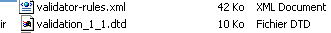
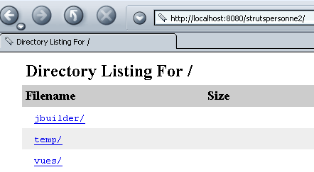
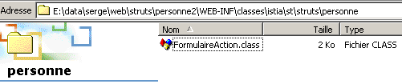
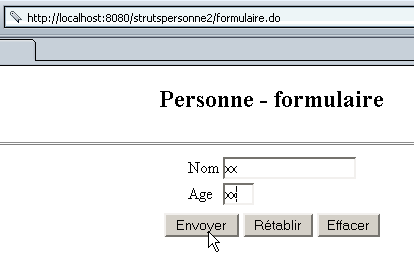

5. Formulaires dynamiques avec contraintes d'intégrité
Nous allons développer maintenant une nouvelle application appelée strutspersonne2 utilisant
- un formulaire dynamique comme dans strutspersonne1
- un fichier de déclaration de contraintes d'intégrité à vérifier par les champs de ce formulaire dynamique
5.1. Déclaration des contraintes d'intégrité
La classe utilisée pour stocker les valeurs nom et age de l'application strutspersonne1 était déclarée comme suit :
<form-beans>
<form-bean name="frmPersonne" type="istia.st.struts.personne.PersonneDynaForm">
<form-property name="nom" type="java.lang.String" initial=""/>
<form-property name="age" type="java.lang.String" initial=""/>
</form-bean>
</form-beans>
Nous avons du écrire la classe PersonneDynaForm pour disposer d'une méthode validate capable de vérifier que les valeurs nom et age du formulaire dynamique étaient valides. Les vérifications à faire étaient de deux sortes :
- les deux champs devaient être non vides
- le champ age devait vérifier le masque (expression régulière) \s*\d+\s*
Ces deux vérifications font partie des vérifications que l'environnement StrutsValidator peut effectuer. Cet environnement vient avec Struts et comporte un certain nombre de classes qu'on trouve dans commons-validator.jar et jakarta-oro.jar. Si vous avez suivi la procédure, expliquée en début de document, d'installation des bibliothèques de Struts au sein de Tomcat, ces bibliothèques sont déjà disponibles à Tomcat. Assurez-vous qu'elles le sont également à Jbuilder. Ceci a également été expliqué en début de document.
La nouvelle déclaration du formulaire dans struts-config.xml devient la suivante :
<form-beans>
<form-bean name="frmPersonne" type="org.apache.struts.validator.DynaValidatorForm">
<form-property name="nom" type="java.lang.String" initial=""/>
<form-property name="age" type="java.lang.String" initial=""/>
</form-bean>
</form-beans>
Il y a donc très peu de différence. La classe associée au formulaire dynamique est maintenant une classe prédéfinie de StrutsValidator : org.apache.struts.validator.DynaValidatorForm. Le développeur n'a plus de classe à écrire. Il précise les contraintes d'intégrité que doit vérifier le formulaire dans un fichier XML séparé. Le contrôleur Struts doit connaître le nom de ce fichier. Apparaît pour cela une nouvelle section de configuration dans le fichier struts-config.xml :
<plug-in className="org.apache.struts.validator.ValidatorPlugIn">
<set-property
property="pathnames"
value="/WEB-INF/validator-rules.xml,/WEB-INF/validation.xml"
/>
</plug-in>
La section <plug-in> sert à charger une classe externe à Struts. Son attribut principal est classname qui indique nom de la classe à instancier. L'objet instancié peut avoir besoin de s'initialiser. Ceci est fait au moyen de balises set-property qui a deux attributs :
- property : le nom de la propriété à iitialiser
- value : la valeur de la propriété
Ici, la classe DynaValidatorForm a besoin de connaître deux informations :
- le fichier XML qui définit les contraintes d'intégrité standard que la classe sait vérifier.
- le fichier XML définissant les contraintes d'intégrité des différents formulaires dynamiques de l'application
Ces deux informations sont ici données par la propriété pathnames. La valeur de cette propriété est une liste de fichiers XML que le validateur chargera :
- validator-rules.xml est le fichier définissant les contraintes d'intégrité standard. Il est livré avec struts. On le trouvera dans <struts>\lib accompagné de son fichier DTD de définition :

- validation.xml est définissant les contraintes d'intégrité des différents formulaires dynamiques de l'application. Il est construit par le développeur. Son nom est libre.
Ces deux fichiers peuvent être placés n'importe-où sous WEB-INF. Dans notre exemple, ils seront placés directement sous WEB-INF :

5.2. Écriture des contraintes d'intégrité des formulaires dynamiques
Le fichier validation.xml contiendra nos contraintes d'intégrité pour les champs nom et age du formulaire frmPersonne de type org.apache.struts.validator.DynaValidatorForm. son contenu est le suivant :
<form-validation>
<global>
<constant>
<constant-name>entierpositif</constant-name>
<constant-value>^\s*\d+\s*$</constant-value>
</constant>
</global>
<formset>
<form name="frmPersonne">
<field property="nom" depends="required">
<arg0 key="personne.nom"/>
</field>
<field property="age" depends="required,mask">
<arg0 key="personne.age"/>
<var>
<var-name>mask</var-name>
<var-value>${entierpositif}</var-value>
</var>
</field>
</form>
</formset>
</form-validation>
Les règles d'écriture à respecter sont les suivantes :
- l'ensemble des règles se trouve dans une balise <form-validation>
- la balise <global> sert à définir des informations à portée globale, c.a.d. valable pour tous les formulaires s'il y en a plusieurs. Ici on a mis en <global> des constantes. Une constante est définie par son nom (balise <constant-name>) et sa valeur (balise <constant-value>). Nous définissons la constante entierpositif avec pour valeur l'expression régulière que doit vérifier un nombre entier positif : ^\s*\d+\s*$ (une suite de chiffres éventuellement précédée et/ou suivie d'espaces).
- la balise <formset> définit l'ensemble des formulaires pour lesquels il y a des contraintes d'intégrité à vérifier
- la balise <form name="unFormulaire"> sert à définir les contraintes d'intégrité d'un formulaire précis, celui dont le nom est donné par l'attribut name. Ce nom doit exister dans la liste des formulaires définis dans struts-config.xml. Ici le formulaire frmPersonne utilisé est défini dans struts-config.xml par la section suivante :
<form-beans>
<form-bean name="frmPersonne" type="org.apache.struts.validator.DynaValidatorForm">
<form-property name="nom" type="java.lang.String" initial=""/>
<form-property name="age" type="java.lang.String" initial=""/>
</form-bean>
- une balise <form> contient autant de balises <field> que de contraintes d'intégrité à vérifier pour le formulaire. Une balise <field> a les attributs suivants :
- property : nom du champ du formulaire pour lequel on définit des contraintes d'intégrité
- depends : liste des contraintes d'intégrité à vérifier.
- les contraintes possibles sont les suivantes : required (le champ doit être non vide), mask (la valeur du champ doit correspondre à une expression régulière définie par la variable mask), integer : la valeur du champ doit être entier, byte (octet), long (entier long), float (réel simple), double (réel double), short (entier court), date (la valeur du champ doit être une date valide), range (la valeur du champ doit être dans un intervalle donné), email : (la valeur du champ doit être une adresse mél valide), ...
- les contraintes d'intégrité sont vérifiées dans l'ordre de l'attribut depends. Si une contrainte n'est pas vérifiée, les suivantes ne sont pas testées.
- chaque contrainte est liée à un message d'erreur définie par une clé. En voici quelques-unes sous la forme contrainte (clé) : required (errors.required), mask (errors.invalid), integer (errors.integer), byte (errors.byte), long (errors.long), ...
- les messages d'erreurs associées aux clés précédentes sont définies dans le fichier validator-rules.xml :
# Struts Validator Error Messages
errors.required={0} is required.
errors.minlength={0} can not be less than {1} characters.
errors.maxlength={0} can not be greater than {1} characters.
errors.invalid={0} is invalid.
errors.byte={0} must be a byte.
errors.short={0} must be a short.
errors.integer={0} must be an integer.
errors.long={0} must be a long.
errors.float={0} must be a float.
errors.double={0} must be a double.
errors.date={0} is not a date.
errors.range={0} is not in the range {1} through {2}.
errors.creditcard={0} is an invalid credit card number.
errors.email={0} is an invalid e-mail address.
- Nous voyons ci-dessus que les messages sont en anglais. Par ailleurs, ils sont en commentaires dans le fichier où il est indiqué qu'il faut les mettre dans le fichier des messages de l'application . Rappelons que celui-ci est défini dans une section du fichier struts-config.xml :
L'attribut parameter indique que les messages de l'application sont dans le fichier
WEB-INF/classes/ressources/personneressources.properties.
Les messages d'erreurs sont donc à placer dans ce fichier. Ils sont rajoutés à ceux existant déjà :
personne.formulaire.nom.vide=<li>Vous devez indiquer un nom</li>
personne.formulaire.age.vide=<li>Vous devez indiquer un age</li>
personne.formulaire.age.incorrect=<li>L'âge est incorrect</li>
errors.header=<ul>
errors.footer=</ul>
# Messages d'erreur de Struts Validator
# la clé est prédéfinie et ne doit pas être changée
# le msg d'erreur associé est libre
# le msg peut avoir jusqu'à 4 paramètres {0} à {3}
errors.required=<li>Le champ [{0}] doit être renseigné.</li>
errors.minlength=<li>Le champ [{0}] foit avoir au moins {1} caractère.</li>
errors.maxlength=<li>Le champ [{0}] ne peut avoir plus de {1} caractères.</li>
errors.invalid=<li>Le champ [{0}] est incorrect.</li>
errors.byte=<li>{0} doit être un octet.</li>
errors.short=<li>{0} doit être un entier court.</li>
errors.integer=<li>{0} doit être un entier.</li>
errors.long=<li>{0} doit être un entier long.</li>
errors.float=<li>{0} doit être un réel simple.</li>
errors.double=<li>{0} doit être un réel double.</li>
errors.date=<li>{0} n'est pas une date valide.</li>
errors.range=<li>{0} doit être dans l'intervalle {1} à {2}.</li>
errors.creditcard=<li>{0} n'est pas un numéro de carte valide.</li>
errors.email=<li>{0} n'est pas une adresse électronique valide.</li>
personne.nom=nom
personne.age=age
Prenons les contraintes d'intégrité du fichier validation.xml une à une pour les expliquer :
<formset>
<form name="frmPersonne">
<field property="nom" depends="required">
<arg0 key="personne.nom"/>
</field>
...
</form>
</formset>
Rappelons que ces contraintes d'intégrité s'appliquent aux champs nom et age d'un formulaire dynamique défini dans struts-config.xml :
<form-bean name="frmPersonne" type="org.apache.struts.validator.DynaValidatorForm">
<form-property name="nom" type="java.lang.String" initial=""/>
<form-property name="age" type="java.lang.String" initial=""/>
</form-bean>
Il est important que les noms du formulaire et des champs de celui-ci soient identiques dans les deux fichiers. La contrainte d'intégrité sur le champ nom (property="nom") dit que le champ doit être non vide (depends="required"). Si ce n'est pas le cas, un objet ActionError de clé errors.required sera généré. Le message associé à cette clé se trouve dans le fichier personne.ressources.properties :
On voit que ce message utilise un paramètre {0}. La valeur de celui-ci est fixé par la balise <arg0> de la contrainte d'intégrité :
Là encore, arg0 est désigné par une clé qu'on trouve également dans le fichier des messages :
Si on met tout cela bout à bout, le message d'erreur généré si le champ nom n'est pas rempli est :
Analysons maintenant la seconde contrainte, celle sur le champ age :
<global>
<constant>
<constant-name>entierpositif</constant-name>
<constant-value>^\s*\d+\s*$</constant-value>
</constant>
</global>
<formset>
<form name="frmPersonne">
...
<field property="age" depends="required,mask">
<arg0 key="personne.age"/>
<var>
<var-name>mask</var-name>
<var-value>${entierpositif}</var-value>
</var>
</field>
</form>
</formset>
Il y a deux contraintes pour le champ age : required et mask. On peut renouveler l'explication précédente pour la contrainte required. On aboutit au fait que le message d'erreur associé à cette contrainte sera :
La seconde contrainte est mask. Cela signifie que le contenu champ doit correspondre à un modèle exprimé par une expression régulière. La valeur de cette dernière est définie dans une balise <var> définissant une variable portant le nom mask (<var-name>) qui a pour valeur ${entierpositif} (<var-value>).entierpositif est une constante définie dans la section <global> du fichier avec pour valeur l'expression régulière ^\s*\d+\s*$. La contrainte d'intégrité est donc que l'âge doit être une suite d'un ou plusieurs chiffres éventuellement précédée ou suivie d'espaces. Si cette contrainte n'est pas vérifiée, un objet ActionError de clé errors.invalid sera généré. Dans le fichier des messages, cette clé est associée au message suivant :
La contrainte doit définir une valeur pour le paramètre {0}. Elle le fait avec la balise <arg0> :
Dans le fichier des messages, la clé personne.age est associée au message suivant :
Le message d'erreur qui sera généré si la contrainte mask n'est pas vérifiée est donc :
5.3. Les classes de l'application
Dans une application Struts, les classes à écrire sont celles des formulaires (ActionForm ou dérivée) et celles des actions (Action ou dérivée). Dans la nouvelle application strutspersonne2 il n'y a plus de classe pour le formulaire. Le contenu du formulaire est défini dans struts-config.xml et les contraintes d'intégrité associées dans WEB-INF/validation.xml. Dans l'application strutspersonne1, la classe FormulaireAction de traitement du formulaire était la suivante :
package istia.st.struts.personne;
....
public class FormulaireAction
extends Action {
public ActionForward execute(ActionMapping mapping, ActionForm form,
HttpServletRequest request, HttpServletResponse response) throws IOException,
ServletException {
// on a un formulaire valide, sinon on ne serait pas arrivé là
DynaActionForm formulaire=(DynaActionForm)form;
request.setAttribute("nom",formulaire.get("nom"));
request.setAttribute("age",formulaire.get("age"));
return mapping.findForward("reponse");
}//execute
}
La classe FormulaireAction s'attendait à recevoir un formulaire sous la forme d'un objet DynaActionForm (code encadré). Or dans le fichier struts-config.xml, la classe du formulaire est définie comme suit :
<form-bean name="frmPersonne" type="org.apache.struts.validator.DynaValidatorForm">
...
</form-bean>
Le formulaire sera donc placé dans un objet de type DynaValidatorForm. Il se trouve que cette classe est dérivée de la classe DynaActionForm. La méthode execute de notre classe FormulaireAction reste donc valide. Elle n'a pas à être ré-écrite.
5.4. Déploiement et test de l'application strutspersonne2
5.4.1. Création du contexte
Nous avons appelé strutspersonne2 cette nouvelle application. Nous créons une nouvelle définition dans le fichier <tomcat>\conf\serveur.xml de Tomcat 4.x :
Ceci fait, il faut relancer Tomcat. On peut vérifier la validité du contexte en demandant l'URL :
http://localhost:8080/strutspersonne2/

5.4.2. Les vues
On copiera le dossier vues de l'application strutspersonne1 dans le dossier de l'application strutspersonne2. En effet, les vues n'ont pas changé.

5.4.3. Le dossier WEB-INF
On copiera le dossier WEB-INF de l'application strutspersonne1 dans le dossier de l'application strutspersonne2. Quelques fichiers changent :

Le fichier de configuration struts-config.xml devient le suivant :
<?xml version="1.0" encoding="ISO-8859-1" ?>
<!DOCTYPE struts-config PUBLIC
"-//Apache Software Foundation//DTD Struts Configuration 1.1//EN"
"http://jakarta.apache.org/struts/dtds/struts-config_1_1.dtd">
<struts-config>
<form-beans>
<form-bean name="frmPersonne" type="org.apache.struts.validator.DynaValidatorForm">
<form-property name="nom" type="java.lang.String" initial=""/>
<form-property name="age" type="java.lang.String" initial=""/>
</form-bean>
</form-beans>
<action-mappings>
<action
path="/main"
name="frmPersonne"
validate="true"
input="/erreurs.do"
scope="session"
type="istia.st.struts.personne.FormulaireAction"
>
<forward name="reponse" path="/reponse.do"/>
</action>
<action
path="/erreurs"
parameter="/vues/erreurs.personne.jsp"
type="org.apache.struts.actions.ForwardAction"
/>
<action
path="/reponse"
parameter="/vues/reponse.personne.jsp"
type="org.apache.struts.actions.ForwardAction"
/>
<action
path="/formulaire"
parameter="/vues/formulaire.personne.jsp"
type="org.apache.struts.actions.ForwardAction"
/>
</action-mappings>
<message-resources
parameter="ressources.personneressources"
null="false"
/>
<plug-in className="org.apache.struts.validator.ValidatorPlugIn">
<set-property
property="pathnames"
value="/WEB-INF/validator-rules.xml,/WEB-INF/validation.xml"
/>
</plug-in>
</struts-config>
Ce fichier est identique à celui de l'application strutspersonne1 à l'exception de la définition dynamique du formulaire et de l'insertion du pluin de validation (parties encadrées).
On ajoute dans WEB-INF le fichier de validation validation.xml suivant :
<form-validation>
<global>
<constant>
<constant-name>entierpositif</constant-name>
<constant-value>^\s*\d+\s*$</constant-value>
</constant>
</global>
<formset>
<form name="frmPersonne">
<field property="nom" depends="required">
<arg0 key="personne.nom"/>
</field>
<field property="age" depends="required,mask">
<arg0 key="personne.age"/>
<var>
<var-name>mask</var-name>
<var-value>${entierpositif}</var-value>
</var>
</field>
</form>
</formset>
</form-validation>
On ajoute dans WEB-INF les fichiers validator-rules.xml, validator-rules_1_1.dtd qu'on trouvera dans <struts>\lib :
Dans le dossier WEB-INF/classes, on n'a plus qu'une seule classe :

Dans le dossier WEB-INF\classes\ressources, on trouve le fichier des messages personneressources.properties suivant :
personne.formulaire.nom.vide=<li>Vous devez indiquer un nom</li>
personne.formulaire.age.vide=<li>Vous devez indiquer un age</li>
personne.formulaire.age.incorrect=<li>L'âge est incorrect</li>
errors.header=<ul>
errors.footer=</ul>
# Messages d'erreur de Struts Validator
# la clé est prédéfinie et ne doit pas être changée
# le msg d'erreur associé est libre
# le msg peut avoir jusqu'à 4 paramètres {0} à {3}
errors.required=<li>Le champ [{0}] doit être renseigné.</li>
errors.minlength=<li>Le champ [{0}] foit avoir au moins {1} caractère.</li>
errors.maxlength=<li>Le champ [{0}] ne peut avoir plus de {1} caractères.</li>
errors.invalid=<li>Le champ [{0}] est incorrect.</li>
errors.byte=<li>{0} doit être un octet.</li>
errors.short=<li>{0} doit être un entier court.</li>
errors.integer=<li>{0} doit être un entier.</li>
errors.long=<li>{0} doit être un entier long.</li>
errors.float=<li>{0} doit être un réel simple.</li>
errors.double=<li>{0} doit être un réel double.</li>
errors.date=<li>{0} n'est pas une date valide.</li>
errors.range=<li>{0} doit être dans l'intervalle {1} à {2}.</li>
errors.creditcard=<li>{0} n'est pas un numéro de carte valide.</li>
errors.email=<li>{0} n'est pas une adresse électronique valide.</li>
personne.nom=nom
personne.age=age

5.5. Tests
Nous sommes prêts pour les tests. On trouvera ci-dessous quelques copies d'écran que le lecteur est invité à reproduire.
On demande l'URL http://localhost:8080/strutspersonne2/formulaire.do :

On utilise le bouton [Envoyer] sans remplir les champs :

On recommence avec une erreur sur le champ age :

On obtient la réponse suivante :

On recommence en mettant cette fois-ci des valeurs correctes :

On obtient la réponse suivante :

5.6. Conclusion
Nous avons montré que l'utilisation de formulaires dynamiques pour lesquelles les contraintes d'intégrité sont "standard" évite la création de classes pour les représenter. Si les contraintes d'intégrité sortent du standard alors on est amené de nouveau à créer des classes pour vérifier ces nouvelles contraintes.